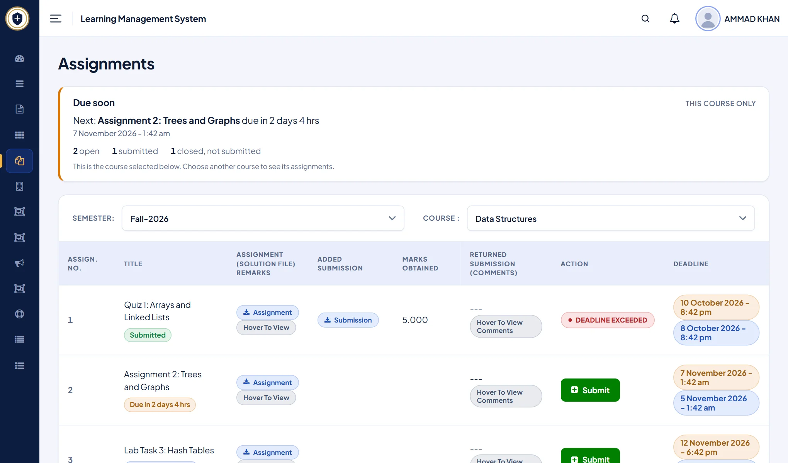
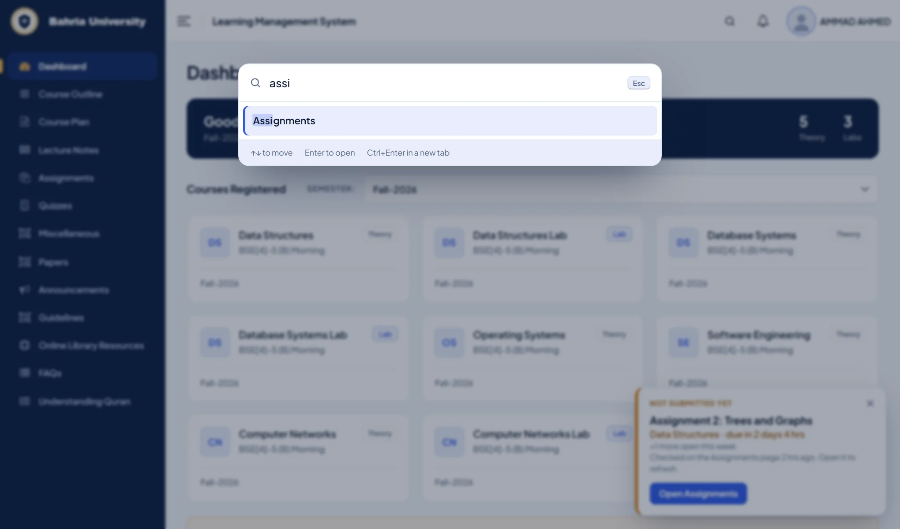

What Campuslit changes on the LMS
The Bahria LMS is where you open course outlines, lecture notes, assignments and quizzes. Campuslit does not replace it or log in for you. It restyles the pages you already use and adds a few helpers that read what the page already shows.
- A redesigned dashboard. A greeting, your courses as cards (theory and lab marked), and a clear menu instead of a long plain list.
- Due soon. The Assignments page gets a card that counts down to your next deadline, and every assignment says whether it is open, submitted or closed.
- Assignment reminder. A small note on other LMS pages names the next assignment you have not submitted. Deadlines are read in Pakistan time.
- Quick search. Press
Ctrl+K(or/), type a few letters of a menu item, press Enter. It forgives typos. - Six themes and a custom one. Bahria, Crystal, Midnight, Linen, Grove and Bloom, plus your own colours, text size, spacing and typeface.

Never miss a Bahria LMS assignment deadline
The default Assignments page is a wide table. Campuslit keeps every column, but puts a Due soon card on top with a live countdown, and gives each row a plain status so you can see what still needs submitting at a glance.

The reminder stays on your device. Campuslit keeps a short note of your open assignments in your browser so it can remind you on other pages, and the note expires by itself after 150 days.
Jump to any LMS page in two keystrokes
Nested menus are slow. Quick search lists the pages in the menu you can already see and opens the one you type, so assig goes straight to Assignments.

Your login, marks and submissions are untouched
Campuslit changes how pages look. Forms, uploads and downloads still go to the university exactly as before, it never reads your password or what you type into a form, and it sends nothing to us or anyone else. Only if you turn on the optional notifications does it open pages on the two portals, using your own sign-in. It only runs on lms.bahria.edu.pk and cms.bahria.edu.pk. The code is open source under the MIT licence and the privacy policy explains each permission. Campuslit is an independent student project, not made, endorsed or supported by Bahria University.
Questions
How do I redesign the Bahria University LMS?
Install the free Campuslit extension from the Chrome Web Store, then open lms.bahria.edu.pk and sign in as usual. The new design applies automatically and you can change the theme from the toolbar button.
Does Campuslit change my marks or submissions on the LMS?
No. It only changes how the pages look and adds helpers. Your marks, submissions and the buttons that send them stay the university’s, and nothing leaves your browser.
Does it work for every Bahria campus?
Yes. Every campus uses the same student portals, so Campuslit works wherever you study. If a page looks wrong at your campus, report it on GitHub.
Can I go back to the original LMS look?
Yes, instantly. Click the Campuslit button in your toolbar and switch it off for the LMS, or remove the extension.
Try it in a minute
Add Campuslit from the Chrome Web Store, open your LMS, and sign in as usual. If you ever want the original page back, switch Campuslit off from the toolbar button.